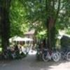

Sie habe keine Audio-Inhalte heruntergeladen. Dies können Sie in den Einstellungen nachholen. Dazu klicken Sie bitte hier und wählen "Download starten".
Hören Sie die Informationen Listen to the information Lustern tau de Toon
Sie habe keine Audio-Inhalte heruntergeladen. Dies können Sie in den Einstellungen nachholen. Dazu klicken Sie bitte hier und wählen "Download starten".
Content 1 Summary Paragraphs
Detail awesome stuff!
Detail awesome stuff numeroe duo.
Content 2
Über den Klosterbezirk About the monastery area Über den Klosterbezirk
Im Jahre 1232 errichteten Zisterziensermönche ein Kloster im Oldenburger Land, aus dem später die Ortschaft Hude hervorging. Die stattliche und gut erhaltene Klosterruine ist ein Denkmal von nationaler Bedeutung.
Der malerische Klosterbezirk liegt zentral am Ortskern und lädt zum Entdecken und Entspannen ein.
Im Klosterbezirk zeugen heute rund 780 Jahre nach dem Bau des Zisterzienserklosters noch Fragmente von dem ehemals bedeutenden Bauwerk.
In 1232 Cistercian monks built a monastery in the Oldenburg region, which later became the town of Hude emerged. The stately and well-preserved ruins of monastery is a monument of national importance.
The picturesque monastery district is centrally located at the town center and invites you to explore and relax.
In the monastery district testify today about 780 years after the construction of the Cistercian monastery still fragments of the once important building.
Plattdeutscher Inhalt steht leider noch nicht zur Verfügung
Zum Klosterbezirk gehören The monastery district includes Zum Klosterbezirk gehören

|
Klosterruine Monastery ruin Klosterruine |
Wassermühle Watermill Wassermühle |
|
|  |
Klosterschenke und Remise Monastery tavern and carriage house Klosterschenke und Remise |
Torkapelle Gatechapel Torkapelle |
|
Museum |